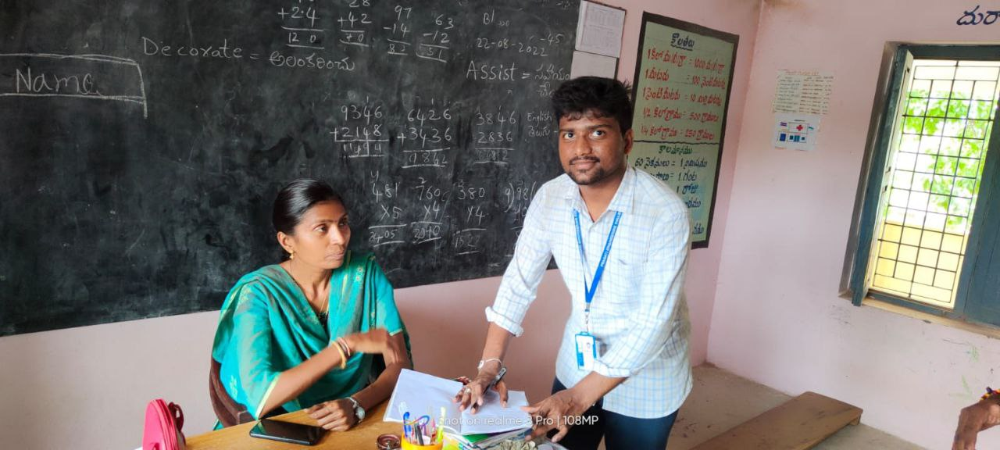
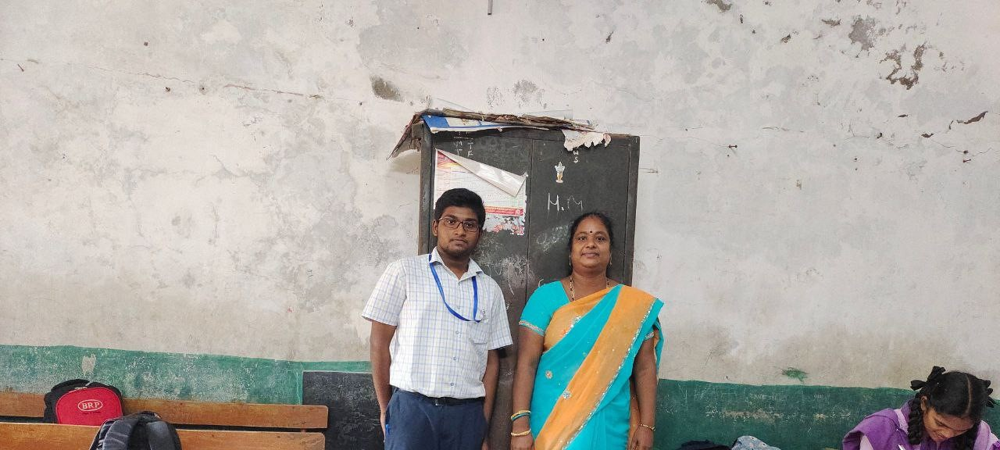
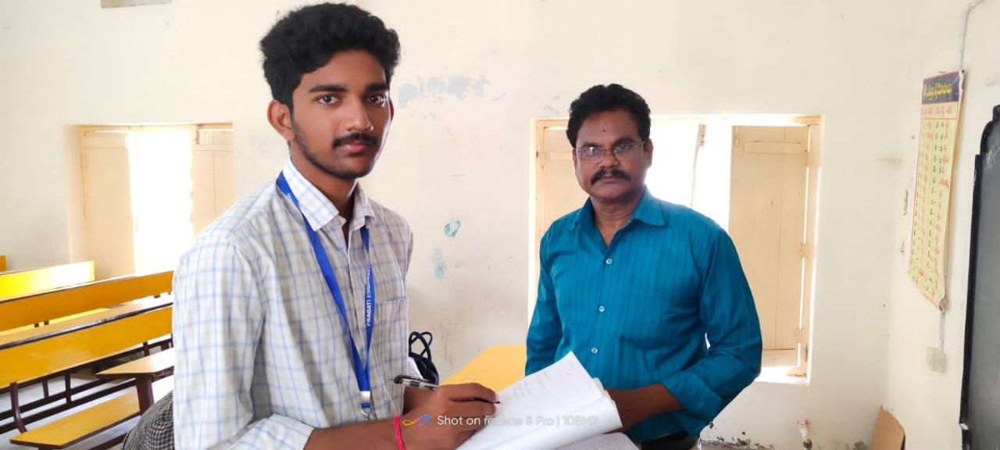

Here as per this NEP 2020,though we may be having no rigid separation between streams, still the stream opted by a student will be identified as the one in which he/she will be studying more number of papers and the stream not opted by a student will be identified as the one in which he/she will be studying less number of papers..
Policies looking stronger intensity to change the face of India over night. Teachers have sufficient knowledge in degree they can train teaching methodologies for 6th to 10th class text books as in earlier. It is being commercialized just like other competitive exams.
 Chidren of the age group of 3 - 8 years should be taken out of the school by their teachers to show them 1. how to form a Queue wherever necessary 2. how to cross a road 3. teach them road discipline including traffic rules 4. take them to botanical gardens to teach them how to care foe plants 5. teach them how to maintain cleanliness on the road.
We have very rich and very upgraded vedic education system which must be provided to our generation and upcoming generations. Though it's hard to make it compulsory, we can start by making it optional for atleast 3 hours in a week to save our culture,Tradition and scientific education which our great saints and forefathers practiced.
